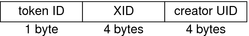
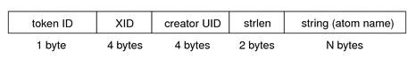

Solaris Trusted Extensions Administrator's Procedures
|
||||||||||||||||||||||||||||||||||||||||
|
Part I Initial Configuration of Trusted Extensions 1. Security Planning for Trusted Extensions 2. Configuration Roadmap for Trusted Extensions 3. Adding Solaris Trusted Extensions Software to the Solaris OS (Tasks) 4. Configuring Trusted Extensions (Tasks) 5. Configuring LDAP for Trusted Extensions (Tasks) 6. Configuring a Headless System With Trusted Extensions (Tasks) Part II Administration of Trusted Extensions 7. Trusted Extensions Administration Concepts 8. Trusted Extensions Administration Tools 9. Getting Started as a Trusted Extensions Administrator (Tasks) 10. Security Requirements on a Trusted Extensions System (Overview) 11. Administering Security Requirements in Trusted Extensions (Tasks) 12. Users, Rights, and Roles in Trusted Extensions (Overview) 13. Managing Users, Rights, and Roles in Trusted Extensions (Tasks) 14. Remote Administration in Trusted Extensions (Tasks) 15. Trusted Extensions and LDAP (Overview) 16. Managing Zones in Trusted Extensions (Tasks) 17. Managing and Mounting Files in Trusted Extensions (Tasks) 18. Trusted Networking (Overview) 19. Managing Networks in Trusted Extensions (Tasks) 20. Multilevel Mail in Trusted Extensions (Overview) 21. Managing Labeled Printing (Tasks) 22. Devices in Trusted Extensions (Overview) 23. Managing Devices for Trusted Extensions (Tasks) 24. Trusted Extensions Auditing (Overview) Trusted Extensions and Auditing Audit Management by Role in Trusted Extensions 25. Software Management in Trusted Extensions (Tasks) Creating and Managing a Security Policy Site Security Policy and Trusted Extensions Computer Security Recommendations Physical Security Recommendations Personnel Security Recommendations Additional Security References B. Using CDE Actions to Install Zones in Trusted Extensions Associating Network Interfaces With Zones by Using CDE Actions (Task Map) Preparing to Create Zones by Using CDE Actions (Task Map) Creating Labeled Zones by Using CDE Actions (Task Map) C. Configuration Checklist for Trusted Extensions Checklist for Configuring Trusted Extensions D. Quick Reference to Trusted Extensions Administration Administrative Interfaces in Trusted Extensions Solaris Interfaces Extended by Trusted Extensions Tighter Security Defaults in Trusted Extensions Limited Options in Trusted Extensions E. List of Trusted Extensions Man Pages Trusted Extensions Man Pages in Alphabetical Order |
Trusted Extensions Audit ReferenceTrusted Extensions software adds audit classes, audit events, audit tokens, and audit policy options to the Solaris OS. Several auditing commands are extended to handle labels. Trusted Extensions audit records include a label, as shown in the following figure. Figure 24-1 Typical Audit Record on a Labeled System
Trusted Extensions Audit ClassesThe audit classes that Trusted Extensions software adds to the Solaris OS are listed alphabetically in the following table. The classes are listed in the /etc/security/audit_class file. For more information about audit classes, see the audit_class(4) man page. Table 24-1 X Server Audit Classes
The X server audit events are mapped to these classes according to the following criteria:
Trusted Extensions Audit EventsTrusted Extensions software adds audit events to the system. The new audit events and the audit classes to which the events belong are listed in the /etc/security/audit_event file. The audit event numbers for Trusted Extensions are between 9000 and 10000. For more information about audit events, see the audit_event(4) man page. Trusted Extensions Audit TokensThe audit tokens that Trusted Extensions software adds to the Solaris OS are listed alphabetically in the following table. The tokens are also listed in the audit.log(4) man page. Table 24-2 Trusted Extensions Audit Tokens
label TokenThe label token contains a sensitivity label. This token contains the following fields:
The following figure shows the token format. Figure 24-2 label Token Format A label token is displayed by the praudit command as follows: sensitivity label,ADMIN_LOW xatom TokenThe xatom token contains information concerning an X atom. This token contains the following fields:
An xatom token is displayed by praudit as follows: X atom,_DT_SAVE_MODE xclient TokenThe xclient token contains information concerning the X client. This token contains the following fields:
An xclient token is displayed by praudit as follows: X client,15 xcolormap TokenThe xcolormap token contains information about the colormaps. This token contains the following fields:
The following figure shows the token format. Figure 24-3 Format for xcolormap, xcursor, xfont, xgc, xpixmap, and xwindow TokensAn xcolormap token is displayed by praudit as follows: X color map,0x08c00005,srv xcursor TokenThe xcursor token contains information about the cursors. This token contains the following fields:
Figure 24-3 shows the token format. An xcursor token is displayed by praudit as follows: X cursor,0x0f400006,srv xfont TokenThe xfont token contains information about the fonts. This token contains the following fields:
Figure 24-3 shows the token format. An xfont token is displayed by praudit as follows: X font,0x08c00001,srv xgc TokenThe xgc token contains information about the xgc. This token contains the following fields:
Figure 24-3 shows the token format. An xgc token is displayed by praudit as follows: Xgraphic context,0x002f2ca0,srv xpixmap TokenThe xpixmap token contains information about the pixel mappings. This token contains the following fields:
Figure 24-3 shows the token format. An xpixmap token is displayed by praudit as follows: X pixmap,0x08c00005,srv xproperty TokenThe xproperty token contains information about various properties of a window. This token contains the following fields:
The following figure shows an xproperty token format. Figure 24-4 xproperty Token FormatAn xproperty token is displayed by praudit as follows: X property,0x000075d5,root,_MOTIF_DEFAULT_BINDINGS xselect TokenThe xselect token contains the data that is moved between windows. This data is a byte stream with no assumed internal structure and a property string. This token contains the following fields:
The following figure shows the token format. Figure 24-5 xselect Token Format An xselect token is displayed by praudit as follows: X selection,entryfield,halogen xwindow TokenThe xwindow token contains information about a window. This token contains the following fields:
Figure 24-3 shows the token format. An xwindow token is displayed by praudit as follows: X window,0x07400001,srv Trusted Extensions Audit Policy OptionsTrusted Extensions adds two audit policy options to existing Solaris auditing policy options. List the policies to see the additions: $ auditconfig -lspolicy ... windata_down Include downgraded window information in audit records windata_up Include upgraded window information in audit records Extensions to Auditing Commands in Trusted ExtensionsThe auditconfig, auditreduce, and bsmrecord commands are extended to handle Trusted Extensions information:
|
|||||||||||||||||||||||||||||||||||||||
|